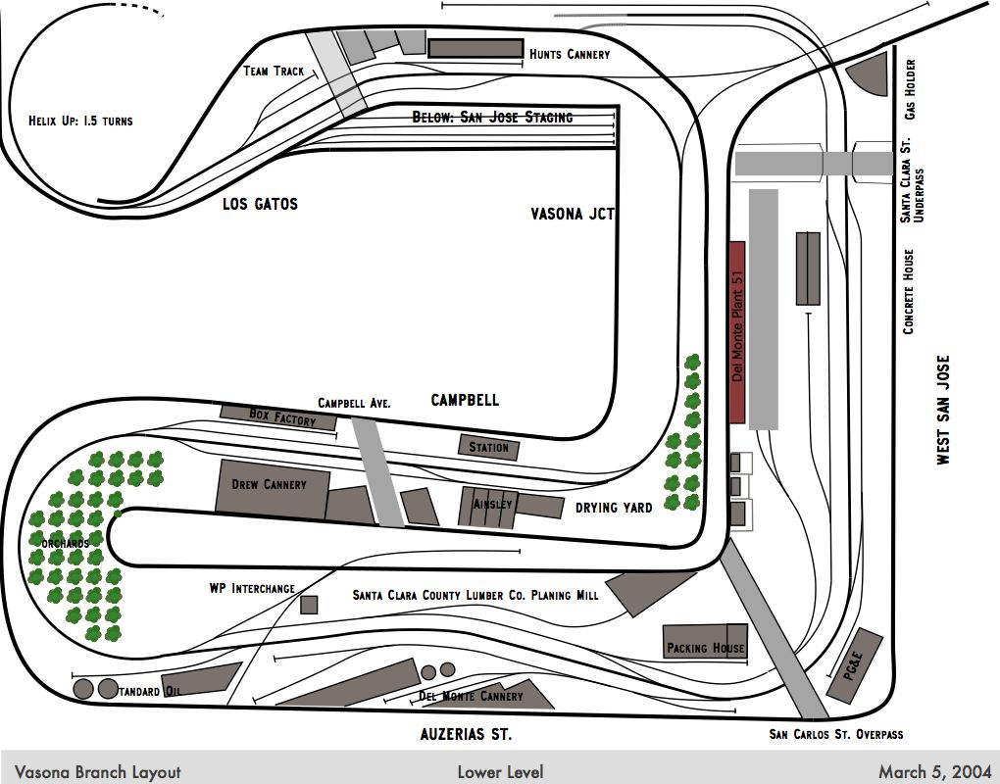

 This is my model railroad; it models a Southern Pacific branch in San Jose, CA. Most of the industries are related to fruit and orchards - canneries, dried fruit packing houses, and box factories. There are two major staging yards on each end, several towns in-between, and an interchange track for the Western Pacific (which is modeled as if it were a staging yard.)
The picture to the right shows Plant 51's door #1. The doors are numbered right-to-left 1-6 on the far track, and 7-10 on the near track. The rightmost two spots on the near track are the Del Monte Oil tracks.
The Del Monte Cannery plant also uses multiple industries to encourage the operator to see the different work being done at the plant, and complicate the switching work. The Del Monte In industry is intended for incoming deliveries, and sits at one end of the Plant. The Del Monte Out and Del Monte Oil industries share the same tracks; the Del Monte Out industry gets all the boxcars for finished goods, while the Del Monte Oil spots handle oil tank cars for fuel oil. The Oil spots are just the last spots on two parallel tracks; a map on the fascia explains the spotting locations to the operator. The Del Monte Spur track handles occasional special traffic and points the opposite way of all the other tracks, encouraging the operator to switch that track separately. The Del Monte Storage track is a bit of track that's normally unused, but is a common place for off-spotting cars that won't fit at their official place. Providing a separate industry for the off-spot allows me to mark that the car is in an incorrect space, and let operators at the next session correctly spot the car.
The San Jose yard is in the SP division, so it's an appropriate destination for empty SP cars, but because it accepts cars from all the divisions - SP, East, Mid, and WP - it will accept all empty freight cars. Because it's a staging yard, empty cars from any railroad touching San Jose Yard are assumed to reach their final home.
The Santa Cruz yard only accepts SP cars, so it's not an appropriate exit for non-SP cars. Non-SP cars do get routed to the Santa Cruz yard because several industries pretending to be located in Santa Cruz Yard ship to the East Coast, and can use eastbound empties to carry the loads.
The Vasona Staging yard is irrelevant for now; no freight trains stop there. In real life, some trains came from Vasona Staging and went to San Jose Yard (and vice-versa), so having Vasona Staging accept all divisions would allow east-coast cars to exit in that direction.
Check out the Vasona Branch homepage for more details on the railroad, towns, and industries. The track plans may help you understand the SwitchList layout configurations.
{kind=link}
{kind=link}
{kind=link}